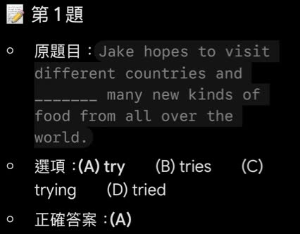

上傳截圖｜第1題（來源AI整理的完整題目）
完整原題
先想一想，再查看答案、解說與原圖
逐項解析
| 選項與原句 | 判讀 | 句意與判斷理由 |
|---|---|---|
| (A) try | 應選 | 與visit並列，第二個to省略後仍用原形try。 |
| (B) tries | 不選 | tries是第三人稱單數現在式，不能與此處to visit的原形結構並列。 |
| (C) trying | 不選 | trying是動名詞或現在分詞；本題需要與visit並列的原形動詞。 |
| (D) tried | 不選 | tried是過去式或過去分詞；句中希望做的動作應用原形try。 |
詳細說明與解題步驟
一、找出hope後面的動作
hope後面接to＋原形動詞，表示希望做某事。這句的兩個目標是「visit different countries」及「try many new kinds of food」。
二、and連接同一層次的兩個動作
句型可拆為hopes to visit ... and (to) try ...。第二個to可以省略，動詞仍用原形try，因此選A。完整意思是：Jake希望到不同國家旅行，並嘗試來自世界各地的許多新食物。
三、不要讓主詞單數干擾判斷
Jake是第三人稱單數，所以主要動詞用hopes；但visit和try受不定詞結構管轄，不跟著加s，也不改用過去式或動名詞。
四、釐清來源對話的說明
省略第二個to，不代表還要改動動詞時態。例如He decided to leave and start his own business，start仍是原形，兩個動作都是他決定要做的事；若寫started，才變成另一個過去式動詞，表達的結構與意思不同。原對話把to start改成started當成「只省略to」的例子，這一步並不正確。長句或強調對比時重複to可使意思清楚，不能只憑句子長或出現對比，就概括成一律不可省略。
本來源上傳的是已含答案及分析的題目截圖，並非原卷照片。作答前只呈現完整題句與四個選項；截圖留在共同收合區內。
核對註記：上傳圖為AI題目整理截圖，題句及A–D選項完整可讀；與現有題庫比對未見相同題句，Created為2026-08-10。
原圖（僅本題）
